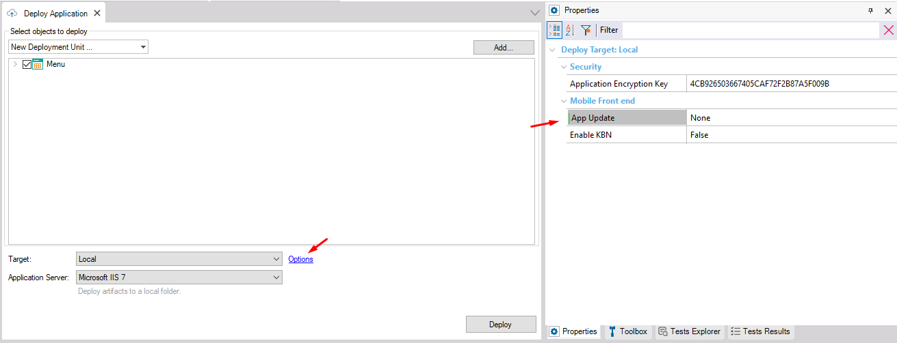

| Major Change | The application requires a major update (binaries need to be updated). The JSON files indicating the version change should be included in the deploy. |
| Minor Change | The application requires a minor update (metadata only, no native binary changes required). The JSON files indicating the version change should be included, as well as the zipped metadata to be read by the application running on the users devices. |
| None | The application is not being updated (it may be the first update or a services-only update that does not affect the native applications) or no native mobile application is being deployed. No additional metadata will be included. |
Generators: Android, Apple
Level: Deploy Target Options
Defines the type of update that will be performed for the deployed Native Mobile application.
For more information on how application updates work, please take a look at HowTo: Versioning Your Native Mobile Application.

This property applies only at design-time.
This property is available since GeneXus 17.